The Magic of Ensemble Algorithms
Question 1
Show plots for bias and variance vs increasing complexity (depth) of decision tree on the given regression dataset. You can use the decision tree implementation from assignment 1 (or sklearn tree).
import numpy as np
np.random.seed(1234)
x = np.linspace(0, 10, 50)
eps = np.random.normal(0, 5, 50)
y = x**2 +1 + eps
#for plotting
import matplotlib.pyplot as plt
plt.plot(x, y, 'o')
plt.plot(x, x**2 + 1, 'r-')
plt.show()Solution
The toy data used for training and testing is as follows -
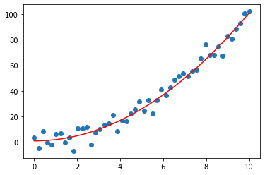
The training and testing curve with respect to mean squared error and increasing complexity is as follows -
Train-test split = 70:30
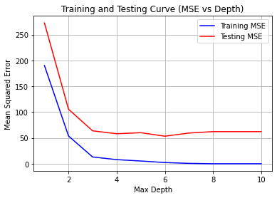
The bias-varience vs depth curve is as follows -

Reference
Estimator. (2023, February 7). In Wikipedia. https://en.wikipedia.org/wiki/Estimator
Question 2
Shuffle the dataset and split the classification dataset into a training set (70%) and a test set (30%). Implement a weighted decision tree and train it using the training set. Use uniform(0,1) distribution to assign weights randomly to the samples. Plot and visualise the decision tree boundary. Use the test set to evaluate the performance of the weighted decision tree and compare your implementation with sklearn. You can copy your implementation of decision tree from assignment 1 to this repository and edit it to take sample weights as an argument while learning the decision tree(Default weight is 1 for each sample).
from sklearn.datasets import make_classification
X, y = make_classification(
n_features=2, n_redundant=0, n_informative=2,
random_state=1, n_clusters_per_class=2, class_sep=0.5)
# For plotting
import matplotlib.pyplot as plt
plt.scatter(X[:, 0], X[:, 1], c=y)Soultuion
The data used for training and testing looks like -
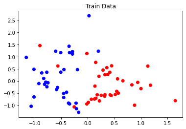
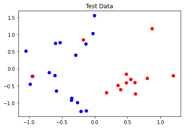
Criterion = information_gain
Metrics for Weighted Decision Tree
Training metrics
Accuracy: 1.0
Class: 1
Precision: 1.0
Recall: 1.0
Class: 0
Precision: 1.0
Recall: 1.0
Testing metrics
Accuracy: 0.7666666666666667
Class: 1
Precision: 0.6875
Recall: 0.8461538461538461
Class: 0
Precision: 0.8571428571428571
Recall: 0.7058823529411765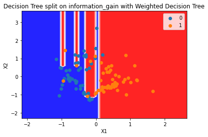
Metrics for Sklearn Implementation
Training metrics
Accuracy: 1.0
Class: 1
Precision: 1.0
Recall: 1.0
Class: 0
Precision: 1.0
Recall: 1.0
Testing metrics
Accuracy: 0.7333333333333333
Class: 1
Precision: 0.6666666666666666
Recall: 0.7692307692307693
Class: 0
Precision: 0.8
Recall: 0.7058823529411765
Criterion = gini_index
Metrics for Weighted Decision Tree
Training metrics
Accuracy: 1.0
Class: 1
Precision: 1.0
Recall: 1.0
Class: 0
Precision: 1.0
Recall: 1.0
Testing metrics
Accuracy: 0.8
Class: 1
Precision: 0.7333333333333333
Recall: 0.8461538461538461
Class: 0
Precision: 0.8666666666666667
Recall: 0.7647058823529411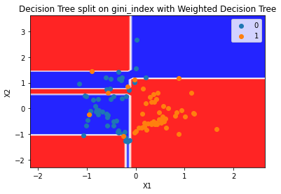
Metrics for Sklearn Implementation
Training metrics
Accuracy: 1.0
Class: 1
Precision: 1.0
Recall: 1.0
Class: 0
Precision: 1.0
Recall: 1.0
Testing metrics
Accuracy: 0.8
Class: 1
Precision: 0.7333333333333333
Recall: 0.8461538461538461
Class: 0
Precision: 0.8666666666666667
Recall: 0.7647058823529411
Question 3
Part A
Implement Adaboost on Decision Stump (depth=1 tree). You can use Decision Tree learnt in assignment 1 or sklearn decision tree and solve it for the case of real input and discrete output. Edit ensemble/ADABoost.py
Solution
The dataset used for tarining looks like -
Number of samples = 100 Number of features = 2 Number of classes = 2 Numbeer of estimators = 3 Criteria = gini

The performace of the model can be comprehended as -
Criteria : gini
Accuracy : 0.99
Class : 0
Precision : 1.0
Recall : 0.98
Class : 1
Precision : 0.9803921568627451
Recall : 1.0Part B
Implement AdaBoostClassifier on classification data set. Plot the decision surfaces and compare the accuracy of AdaBoostClassifier using 3 estimators over decision stump. Include your code in q3_ADABoost.py.
Solution
The dataset used for tarining looks like -
Number of samples = 100 Number of features = 2 Number of classes = 2 Numbeer of estimators = 3 Criteria = gini
Decision surfaces of the indivisual estimators -
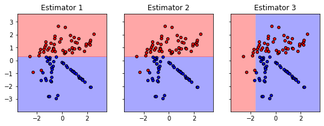
The combined decision surface looks like -
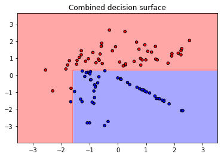
Question 4
Part A Implement Bagging(BaseModel, num_estimators): where base model is the DecisionTree you had implemented in assignment 1 (or sklearn decision tree). In a later assignment, you would have to implement the above over LinearRegression() also, but for now you only have to implement it for Decision Trees. Edit ensemble/bagging.py. Use q4_Bagging.py for testing.
Soultion
The toy dataset which is used for training the model is as follows -
Number of samples = 50 Number of features = 2 Number of classes = 2 Number of estimators = 5 Max depth of each estimator = 20
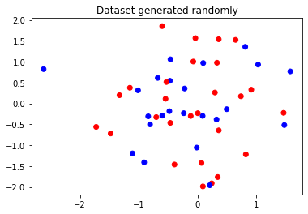
The decision boundries of each estimator is as follows -
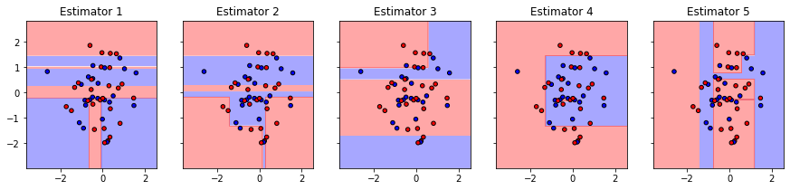
The combined decision boundary is as follows -

The performce of the model can be estimated from the following results
Criteria : gini
Accuracy : 0.82
Class : 0
Precision : 0.8181818181818182
Recall : 0.782608695652174
Class : 1
Precision : 0.8214285714285714
Recall : 0.8518518518518519Part B Implement bagging in parallel fashion, where each decision tree is learnt simultaneously. Perform timing analysis for parallel implementation and normal implementation.
Solution
Study 1
The toy dataset which is used for training both the model is as follows -
Number of samples = 2000 Number of features = 2 Number of classes = 4 Number of estimators = 20 Max depth of each estimator = 20
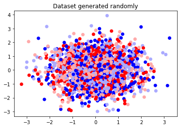
The performace and time required for tarining of the models can be compared from the following metrics -
Criteria : gini
Accuracy Sequencial : 0.5385
Accuracy Parallel : 0.536
Time elapsed in sequencial execution : 0.1579 seconds
Time elapsed in parallel execution : 0.1095 secondsStudy 2
The toy dataset which is used for training both the model is as follows -
Number of samples = 500 Number of features = 2 Number of classes = 4 Number of estimators = 50 Max depth of each estimator = 100

The performace and time required for tarining of the models can be compared from the following metrics -
Criteria : gini
Accuracy Sequencial : 0.683
Accuracy Parallel : 0.678
Time elapsed in sequencial execution : 0.9955 seconds
Time elapsed in parallel execution : 0.5297 secondsStudy 3
The toy dataset which is used for training both the model is as follows -
Number of samples = 10000 Number of features = 2 Number of classes = 6 Number of estimators = 500 Max depth of each estimator = 1000

The performace and time required for tarining of the models can be compared from the following metrics -
Criteria : gini
Accuracy Sequencial : 0.457
Accuracy Parallel : 0.4561
Time elapsed in sequencial execution : 32.3758 seconds
Time elapsed in parallel execution : 27.2234 secondsQuestion 5
Part A
Implement RandomForestClassifier() and RandomForestRegressor() classes in tree/randomForest.py. Use q5_RandomForest.py for testing.
Solution
Random forest classifier over entropy as criterion returns the following trees as output -
Number of samples = 30 Number of features = 5 Sampling = row sampling
Max Depth = 5 Number of estimators = 3 Number of classes = 5
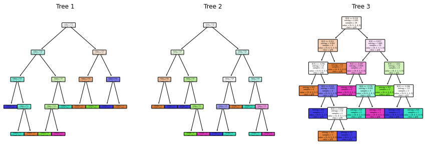The performace of the model can be quantified as -
Criteria : entropy
Accuracy : 0.8333333333333334
Class 0
Precision : 0.7777777777777778
Recall : 0.7777777777777778
Class 3
Precision : 0.875
Recall : 1.0
Class 2
Precision : 1.0
Recall : 0.7142857142857143
Class 4
Precision : 0.6
Recall : 0.75
Class 1
Precision : 1.0
Recall : 1.0Random forest classifier over gini as criterion returns the following trees as output -
Number of samples = 30 Number of features = 5 Sampling = row sampling
Max Depth = 5 Number of estimators = 3 Number of classes = 5

The performace of the model can be quantified as -
Criteria : gini
Accuracy : 0.8333333333333334
Class 0
Precision : 0.875
Recall : 0.7777777777777778
Class 3
Precision : 1.0
Recall : 0.7142857142857143
Class 2
Precision : 0.875
Recall : 1.0
Class 4
Precision : 1.0
Recall : 0.75
Class 1
Precision : 0.5
Recall : 1.0Random forest classifier over squared_error as criterion returns the following trees as output -
Number of samples = 30 Number of features = 5 Sampling = row sampling
Max Depth = 5 Number of estimators = 3
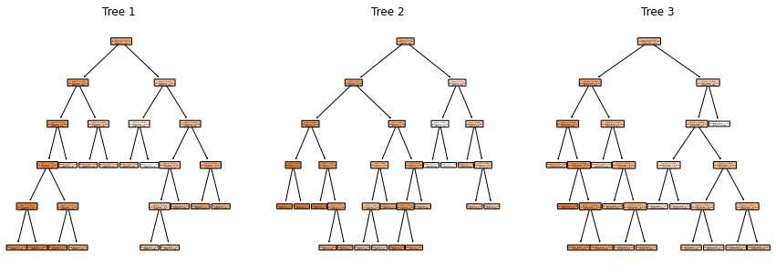
The performace of the model can be quantified as -
Criteria : squared_error
RMSE : 0.5159266120836465
MAE : 0.364302808727380Random forest classifier over squared_error as criterion returns the following trees as output -
Number of samples = 30 Number of features = 3 Sampling = column sampling
Max Depth = 5 Number of estimators = 3

The performace of the model can be quantified as -
Criteria : squared_error
RMSE : 40.52918401932447
MAE : 24.29257288596476Part B
Generate the plots for classification data set. Include you code in random_forest_classification.py
Solution
The toy dataset used for tarining is as follows -

Random forest classifier over gini as criterion returns the following trees as output -
Number of samples = 100 Number of features = 3 Sampling = column sampling
Max Depth = 5 Number of estimators = 3 Number of classes = 2
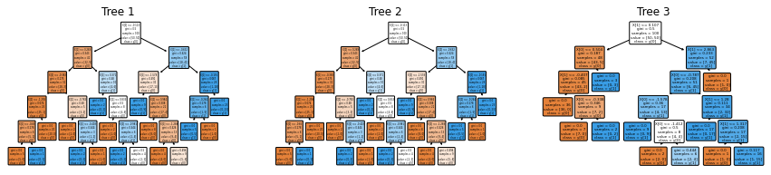
The decision surfaces for the corrosponding estimators is as follows -

The combined decision surface is as follows -

The performace of the model can be quantified as -
Criteria : gini
Accuracy : 0.91
Class 1
Precision : 1.0
Recall : 0.88
Class 0
Precision : 1.0
Recall : 0.94Question 6
Implement Gradient Boosted Decision trees on the regression dataset given below. You need to edit the ensemble/gradientBoosted.py and q6_gradientBoosted.py
from sklearn.datasets import make_regression
X, y= make_regression(
n_features=3,
n_informative=3,
noise=10,
tail_strength=10,
random_state=42,
)
# For plotting
import matplotlib.pyplot as plt
plt.scatter(X[:, 0], y)Solution
The rabdomly generated data for the training looks like -
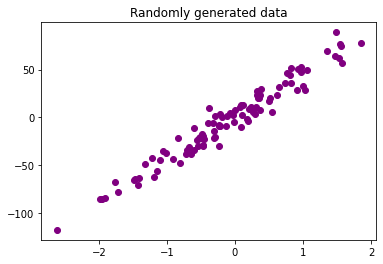
We trained an ensamble with gradient boosted decision tree upon the given data with the following parameters -
Criteria = squared_error Number of estimators = 20 Learning rate = 0.1 Max depth = 3
The performace of the model can be comprehended with the following results -
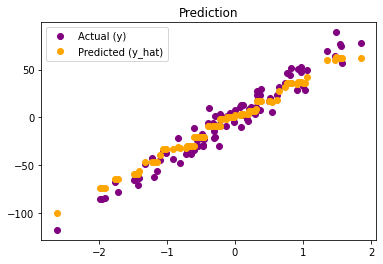
Criteria : squared_error
RMSE : 8.74626791232833
MAE : 7.075693381159919